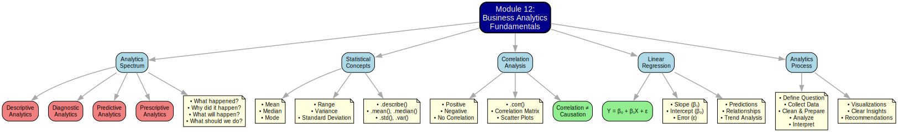

Module 12 Summary: Business Analytics Fundamentals and Applications
Module 12 Overview
Welcome to the summary for Module 12, the capstone module of our course! This module, “Business Analytics Fundamentals and Applications,” serves as a bridge, connecting the Python programming and data manipulation skills you’ve acquired with the broader field of Business Analytics. We shift from intensive coding to explore the core concepts that enable data-driven decision-making in organizations. This module is primarily conceptual, aiming to provide a framework for understanding how your technical skills translate into actionable business insights. We’ll revisit statistical measures within an analytics context and touch upon predictive modeling, all while emphasizing interpretation and communication of findings.
What We Learned
In Module 12, we focused on understanding the landscape of business analytics. Key learning objectives included:
Defining Business Analytics: Understanding its role and significance in modern business operations.
Describing Types of Analytics: Differentiating between descriptive, diagnostic, predictive, and prescriptive analytics, and identifying pertinent business questions for each type.
Interpreting Descriptive Statistics: Explaining measures of central tendency (mean, median, mode) and dispersion (variance, standard deviation, range) from a business perspective.
Understanding Correlation: Calculating and interpreting correlation coefficients to evaluate linear relationships between variables.
Grasping Basic Regression Concepts: Understanding the foundational idea of linear regression for modeling relationships and making predictions.
Applying Analytics Concepts: Connecting analytical questions, data, statistical methods, and Python tools to address business scenarios.
Communicating Findings: Recognizing the essential elements for effectively communicating analytical results to support decision-making processes.
Mind Map: Module 12 Content

1. The Spectrum of Business Analytics
Business analytics encompasses a range of activities that transform data into insights. These can be categorized into four main types, often building upon each other:
1.1 Descriptive Analytics: What Happened?
Goal: To summarize historical data and understand past events and performance. This is the most common form of analytics.
Typical Questions:
What were our total sales last quarter?
Which product categories are the most popular?
How did website traffic change month-over-month?
What is the average customer satisfaction score?
Techniques: Data aggregation, reporting, dashboards, creation of summary statistics (mean, median, mode, counts, percentages), and basic data visualizations (bar charts, line charts, pie charts).
Python Connection: Pandas is extensively used for loading, cleaning, and summarizing data (e.g.,
df.describe(),df.mean(),df.groupby().sum()). Matplotlib is used for creating visualizations from this summarized data.
#| caption: "Example: Descriptive Analytics with Pandas (Section 1.1)"
import pandas as pd
import matplotlib.pyplot as plt
# Sample Sales Data
data = {
'Month': pd.to_datetime(['2024-01', '2024-02', '2024-03', '2024-04']),
'Region': ['North', 'North', 'South', 'South'],
'Product': ['A', 'B', 'A', 'B'],
'Sales': [5000, 6500, 4800, 5200]
}
df_sales = pd.DataFrame(data)
df_sales.set_index('Month', inplace=True)
print("--- Basic Descriptive Statistics for Sales ---")
print(df_sales['Sales'].describe())
print("\n--- Total Sales by Region ---")
total_sales_region = df_sales.groupby('Region')['Sales'].sum()
print(total_sales_region)
# Visualization (Descriptive)
total_sales_region.plot(kind='bar', title='Total Sales by Region', ylabel='Total Sales ($)', rot=0)
plt.tight_layout()
plt.show()1.2 Diagnostic Analytics: Why Did It Happen?
Goal: To delve deeper into data to uncover the reasons and root causes behind past performance, often following up on findings from descriptive analytics.
Typical Questions:
Why did sales decline in a specific region last quarter?
What factors contributed to an increase in customer churn?
Why is one customer segment outperforming another?
Techniques: Drill-downs into data, correlation analysis, basic hypothesis testing, identifying patterns, and spotting anomalies.
Python Connection: Pandas’ grouping (
.groupby()), filtering, and correlation calculation (.corr()) capabilities, along with Matplotlib visualizations (e.g., scatter plots, comparative line charts), are key for initial diagnostic investigations.
1.3 Predictive Analytics: What Will Happen?
Goal: To use historical data to build statistical or machine learning models that forecast future outcomes or assess the likelihood of future events.
Typical Questions:
What are the projected sales for the next fiscal year?
Which customers are at high risk of churning?
What is the probability of a marketing lead converting to a sale?
What is the expected demand for a new product line?
Techniques: Statistical modeling (e.g., regression, time series analysis), machine learning algorithms (e.g., classification, clustering), and forecasting methods.
Python Connection: Libraries such as
scikit-learn(for machine learning),statsmodels(for statistical modeling), and evenNumPyorSciPy(for basic trend fitting and statistical functions) are commonly used.
1.4 Prescriptive Analytics: What Should We Do About It?
Goal: To go beyond prediction and recommend specific actions or strategies to achieve desired business outcomes or optimize objectives, often leveraging insights from predictive models.
Typical Questions:
What specific marketing interventions should be implemented to reduce customer churn?
How can pricing strategies be adjusted to maximize profitability?
What are the optimal inventory levels for each retail location?
Which portfolio of projects will yield the highest return on investment?
Techniques: Optimization algorithms, simulation modeling, decision analysis, and A/B testing frameworks.
Python Connection: Specialized libraries like
SciPy.optimize, simulation tools, and frameworks for integrating outputs from predictive models are employed to guide these recommendations.
2. Core Statistical Concepts for Analytics
Understanding fundamental statistical concepts is crucial for performing meaningful business analytics. Many of these can be readily calculated using Python libraries like Pandas.
2.1 Measures of Central Tendency
These statistics describe the “center” or typical value within a dataset.
Mean: The arithmetic average of all values (
series.mean()). It can be significantly affected by outliers.- Business Example: Average monthly revenue, average transaction value.
Median: The middle value when the data is sorted (
series.median()). It is more robust to outliers than the mean.- Business Example: Median employee salary in a department (often preferred over mean if there are extreme salaries), median customer age.
Mode: The value that appears most frequently in a dataset (
series.mode()). Most useful for categorical data or identifying common occurrences in numerical data.- Business Example: Most frequently purchased product, most common customer complaint category.
#| caption: "Calculating Central Tendency with Pandas (Section 2.1)"
import pandas as pd
data = {'Salary': [50000, 55000, 60000, 52000, 150000, 58000, 62000]} # Includes an outlier
s_salary = pd.Series(data['Salary'])
print(f"Mean Salary: ${s_salary.mean():,.2f}")
print(f"Median Salary: ${s_salary.median():,.2f}") # Median is less affected by the $150k outlier
# Mode might not be uniquely informative for this specific dataset.
# print(f"Mode Salary: {s_salary.mode().tolist()}")2.2 Measures of Dispersion (Variability)
These statistics describe the spread or variability of data points around the central value.
Range: The difference between the maximum and minimum values (
series.max() - series.min()). Simple to calculate but highly sensitive to outliers.Variance: The average of the squared differences from the mean (
series.var()). It measures the overall spread, but its units are squared, making interpretation less direct.Standard Deviation: The square root of the variance (
series.std()). It measures the typical or average deviation of data points from the mean, expressed in the original units of the data. This is a very commonly used measure of spread.- Business Example: Standard deviation of product delivery times (indicates consistency or variability in delivery), standard deviation of sales figures across different stores (shows how consistent store performance is).
#| caption: "Calculating Dispersion with Pandas (Section 2.2)"
import pandas as pd
data = {'DeliveryTime': [2, 3, 4, 2, 5, 3, 6, 2, 3]} # Delivery times in days
s_delivery = pd.Series(data['DeliveryTime'])
print(f"Range of Delivery Times: {s_delivery.max() - s_delivery.min()} days")
print(f"Variance of Delivery Times: {s_delivery.var():.2f} days squared")
print(f"Standard Deviation of Delivery Times: {s_delivery.std():.2f} days")
print("\nUsing .describe() for a quick summary:")
print(s_delivery.describe())2.3 Correlation: Measuring Linear Relationships
Correlation quantifies the strength and direction of a linear relationship between two numerical variables. The Pearson correlation coefficient (r) ranges from -1 to +1:
+1: Indicates a perfect positive linear relationship (as one variable increases, the other increases proportionally).
-1: Indicates a perfect negative linear relationship (as one variable increases, the other decreases proportionally).
0: Indicates no linear relationship between the variables.
Values closer to +1 or -1 suggest stronger linear relationships, while values closer to 0 indicate weaker or no linear relationship.
Correlation does NOT imply causation! Simply because two variables move together does not mean that one causes the other. There could be an unobserved third variable influencing both, or the relationship could be coincidental.
The .corr() method in Pandas is used to calculate pairwise correlations between columns in a DataFrame.
#| caption: "Calculating and Visualizing Correlation (Section 2.3)"
import pandas as pd
import numpy as np
import matplotlib.pyplot as plt
np.random.seed(123) # for reproducibility
study_hours = np.random.rand(30) * 10
exam_score = 40 + (study_hours * 5) + np.random.randn(30) * 8
df_scores = pd.DataFrame({'StudyHours': study_hours, 'ExamScore': exam_score})
correlation_matrix = df_scores.corr()
print("--- Correlation Matrix ---")
print(correlation_matrix)
correlation_coefficient = correlation_matrix.loc['StudyHours', 'ExamScore']
print(f"\nCorrelation between Study Hours and Exam Score: {correlation_coefficient:.3f}")
df_scores.plot(kind='scatter', x='StudyHours', y='ExamScore',
title='Study Hours vs. Exam Score', grid=True, alpha=0.7)
plt.show()3. Introduction to Predictive Modeling: Regression
Predictive analytics frequently involves building models, and Linear Regression is a foundational technique.
Goal: To model the linear relationship between a dependent variable (Y, the outcome you want to predict) and one or more independent variables (X, the predictors).
Simple Linear Regression: Involves one independent variable. The model aims to find the “best-fitting” straight line through the data points, which can be visualized on a scatter plot.
The equation for a simple linear regression model is: \(Y = \beta_0 + \beta_1X + \epsilon\)
\(Y\): Dependent variable
\(X\): Independent variable
\(\beta_0\): Intercept (the predicted value of Y when X is 0)
\(\beta_1\): Slope (the average change in Y for a one-unit change in X)
\(\epsilon\): Error term (the difference between the actual Y and the predicted Y)
Interpretation: The slope (\(\beta_1\)) is often a key output. It quantifies how much the dependent variable is expected to change, on average, for each one-unit increase in the independent variable.
Prediction: Once the model (i.e., the estimates for \(\beta_0\) and \(\beta_1\)) is determined, you can input new X values to predict corresponding Y values.
The following conceptual example uses numpy.polyfit to fit a line, illustrating the idea.
#| caption: "Conceptual Example: Fitting a Regression Line (Section 3)"
import pandas as pd
import numpy as np
import matplotlib.pyplot as plt
# Using data from the correlation example
np.random.seed(123)
study_hours = np.random.rand(30) * 10
exam_score = 40 + (study_hours * 5) + np.random.randn(30) * 8
df_scores = pd.DataFrame({'StudyHours': study_hours, 'ExamScore': exam_score})
# Fit a simple linear regression line (degree=1 polynomial)
slope, intercept = np.polyfit(df_scores['StudyHours'], df_scores['ExamScore'], 1)
print(f"--- Simple Linear Regression Fit (Conceptual) ---")
print(f"Estimated Intercept (β₀): {intercept:.2f}")
print(f"Estimated Slope (β₁): {slope:.2f}")
# Interpretation: For each additional hour of study, the exam score is predicted
# to increase by approximately {slope:.2f} points, on average.
# Create scatter plot with regression line
df_scores.plot(kind='scatter', x='StudyHours', y='ExamScore',
title='Study Hours vs. Exam Score with Regression Line', grid=True, alpha=0.7)
plt.plot(df_scores['StudyHours'], intercept + slope * df_scores['StudyHours'], color='red',
label=f'Fit: Score ≈ {intercept:.1f} + {slope:.1f}×Hours')
plt.legend()
plt.show()
# Basic prediction
hours_to_predict = 7.5
predicted_score = intercept + slope * hours_to_predict
print(f"\nPredicted score for {hours_to_predict} hours of study: {predicted_score:.1f}")This example serves as a basic illustration. Proper regression analysis requires checking model assumptions, assessing goodness-of-fit (e.g., R-squared), and often involves using more specialized libraries like statsmodels or scikit-learn for robust analysis and detailed interpretation.
4. Applying Analytics & Communicating Findings
The ultimate objective of business analytics is to enable better, data-informed decision-making. This requires not only performing the analysis correctly but also communicating the findings effectively.
The Analytical Process:
Define the Business Question/Problem: Clearly articulate what you are trying to solve or understand. This will guide your choice of analytics type (descriptive, diagnostic, etc.).
Gather & Prepare Data: Access relevant data sources. Utilize your Python and Pandas skills (from Modules 9 & 10) for data cleaning, transformation, and any necessary feature engineering.
Analyze Data: Apply the appropriate analytical techniques:
Descriptive statistics and visualizations (Pandas, Matplotlib) to understand the current situation.
Diagnostic methods (grouping, correlation) to investigate the ‘why’.
Predictive modeling (e.g., regression) to forecast future outcomes.
Prescriptive techniques (e.g., optimization) to recommend actions.
Interpret Results: Translate the numerical outputs, correlations, model coefficients, or visualization patterns into meaningful business insights. Explain the implications of your findings in the context of the initial question.
Communicate Findings: Present your results clearly and persuasively to stakeholders (e.g., managers, clients, colleagues).
Know Your Audience: Tailor the technical depth and language to your audience.
Use Visualizations: Leverage charts and graphs (Module 11) to illustrate key points effectively. A picture is often worth a thousand words.
Tell a Story: Structure your presentation logically. Start with the business question, present the evidence from your analysis, and conclude with actionable insights or recommendations.
Highlight Key Insights: Focus on the most critical takeaways. Avoid overwhelming your audience with excessive data.
State Limitations: Be transparent about any assumptions made, data limitations, or caveats of your analysis.
Your Python skills, particularly with Pandas for data manipulation and Matplotlib for visualization, are essential tools in this process, enabling efficient data handling, metric calculation, and the creation of compelling visual narratives.
5. Course Summary and Next Steps from this Module
This module has provided a conceptual overview of business analytics, framing how your Python skills can be applied to solve business problems. We’ve explored the spectrum of analytics, revisited core statistical concepts, introduced basic predictive modeling via regression, and emphasized the importance of interpretation and communication.
Key Takeaways from Module 12:
Business Analytics is a Spectrum: From describing the past (Descriptive) to prescribing future actions (Prescriptive).
Statistical Foundations are Key: Understanding measures like mean, median, standard deviation, and correlation is crucial for interpreting data.
Python Supports Analytics: Libraries like Pandas, Matplotlib, NumPy, and SciPy are instrumental in performing various analytical tasks.
Correlation is Not Causation: A critical principle to remember when interpreting relationships between variables.
Regression Models Relationships: Linear regression provides a basic framework for understanding and predicting linear relationships.
Communication is Crucial: Analytical insights are only valuable if they can be effectively communicated to drive decisions.
Context Matters: Always interpret analytical results within the specific business context.
This module aimed to provide context and perspective, showing why the Python skills learned throughout the course are so valuable in today’s data-driven business world. You are now better equipped to ask the right questions, apply appropriate analytical thinking (often supported by Python tools), and contribute to more informed business strategies.
Congratulations on completing the conceptual journey through Business Analytics Fundamentals! As you move forward, consider how these principles can guide your application of Python to real-world business challenges. Continue to practice, explore, and apply your skills to transform data into decisions.
Dr. Smith University of South Florida